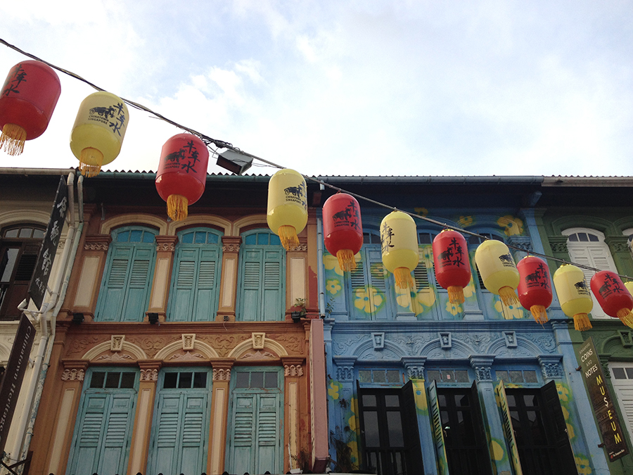
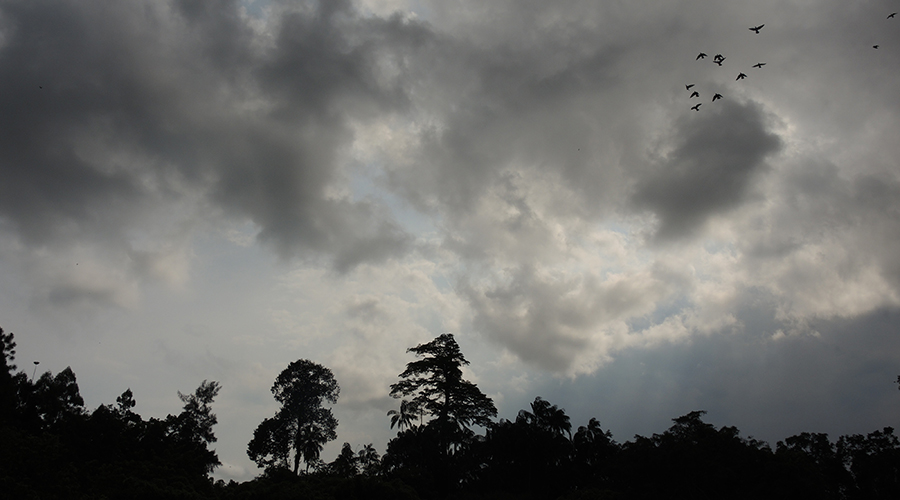
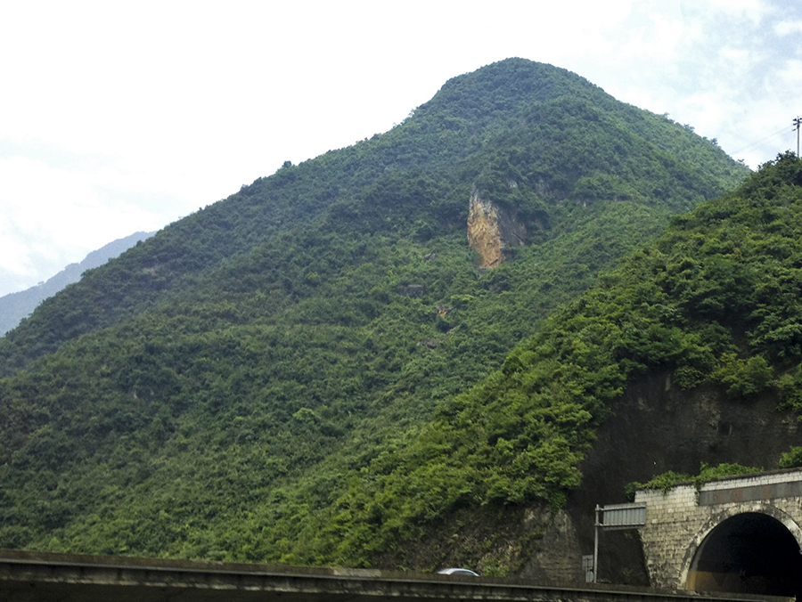
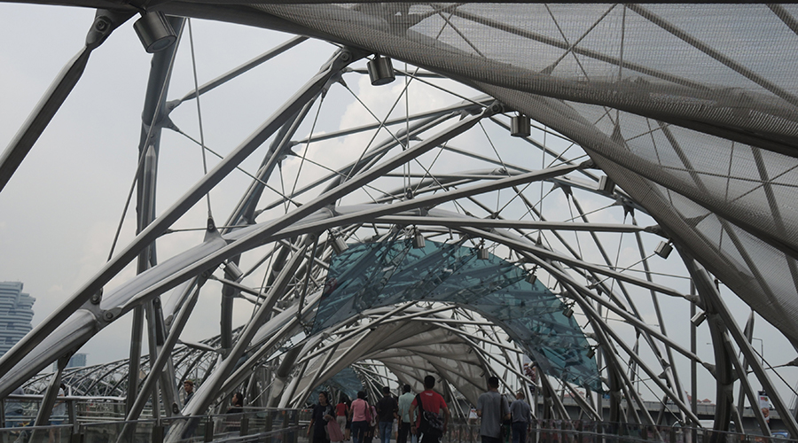

Fellowship to Singapore
An 8-week internship across the world
Welcome to Singapore, a tiny island city-state with a rich culture and strong tradition of sustainability. I traveled to Singapore via the Cultural Vistas Fellowship, a program I was fortunate enough to have the honor of receiving.
For the full experience, and countless more images, read my daily updates from my adventure:
Meet the fellows, a pack of four that took on the Lion City together, sharing experiences and adventures.
The unique blend of natural and built environments met its full potential in the Gardens by the Bay Supertrees, megastructures that house delicate orchids and other plantlife while also harnessing the power of the sun and collecting water to provide resources for the entire center.
I spent my lunch breaks and off-time sketching whenever I found inspiration. (Which was often.)
I cannot ever fully explain just how much I loved the eclectic food culture of Singapore.
Or my business trip to China, touring multiple cities and driving through mountain tunnels and exploring ghost towns.
The "melting pot" of cultures took me to Little India, Haji Lane, Chinatown, and Arab Street.
And I was never disappointed by the architecture. I was fortunate enough to see works my IM Pei, Toyo Ito, Tadao Ando, Thomas Heatherwick, WOHA, Daniel Liebskind, Norman and Foster, Moshe Safdie, and Zaha Hadid.
Though I can talk for hours on end about the incredible design of the city and incredible feats of architecture, it was the city, its culture, and the people that I encountered that made the trip memorable.

I thoroughly enjoyed working in the heart of Chinatown, just caddy-corner to one of the city's finest hawkers and among the plethora of street vendors selling tourist-y knick-knacks and souvenirs.
My experience on the tiny island nation was something I hold close to my heart. It was the first time I have every been truly on my own, and it taught me how to be independent, make decisions, and understand more about myself and my future than ever before.